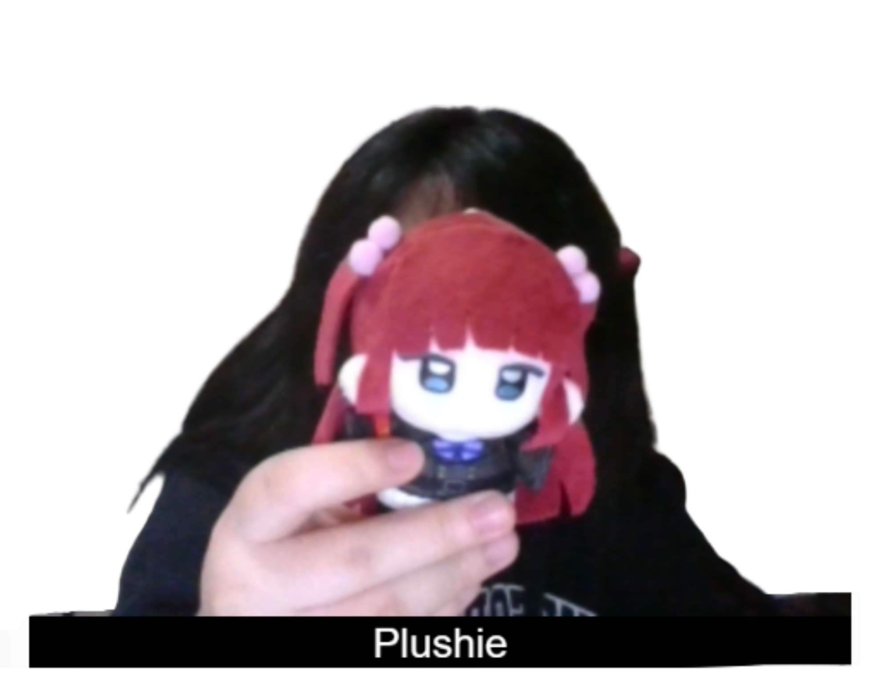
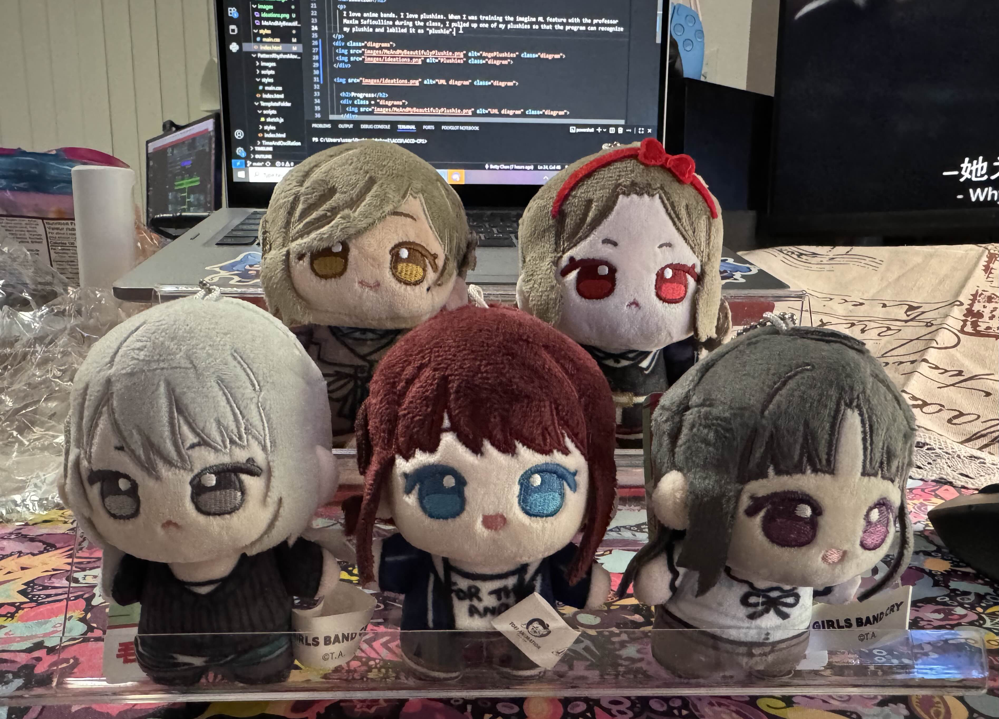
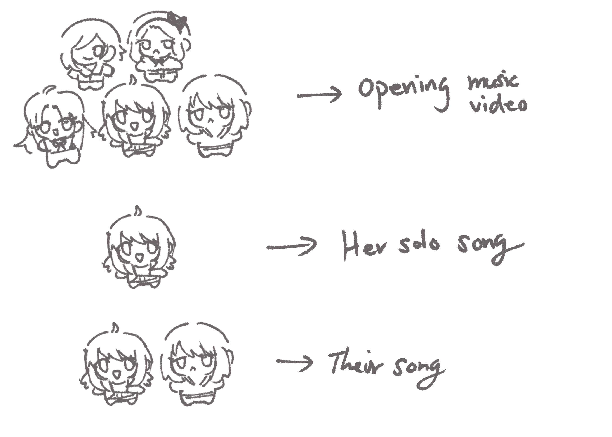
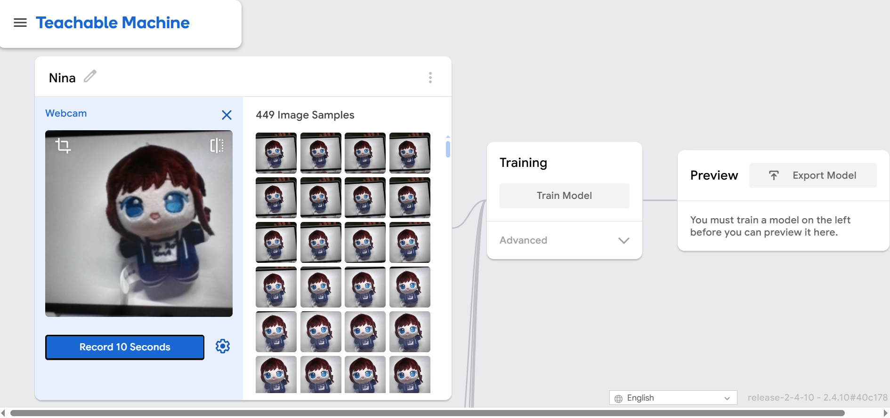
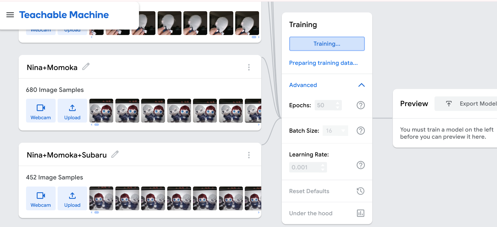
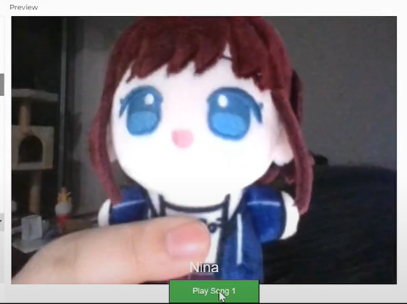
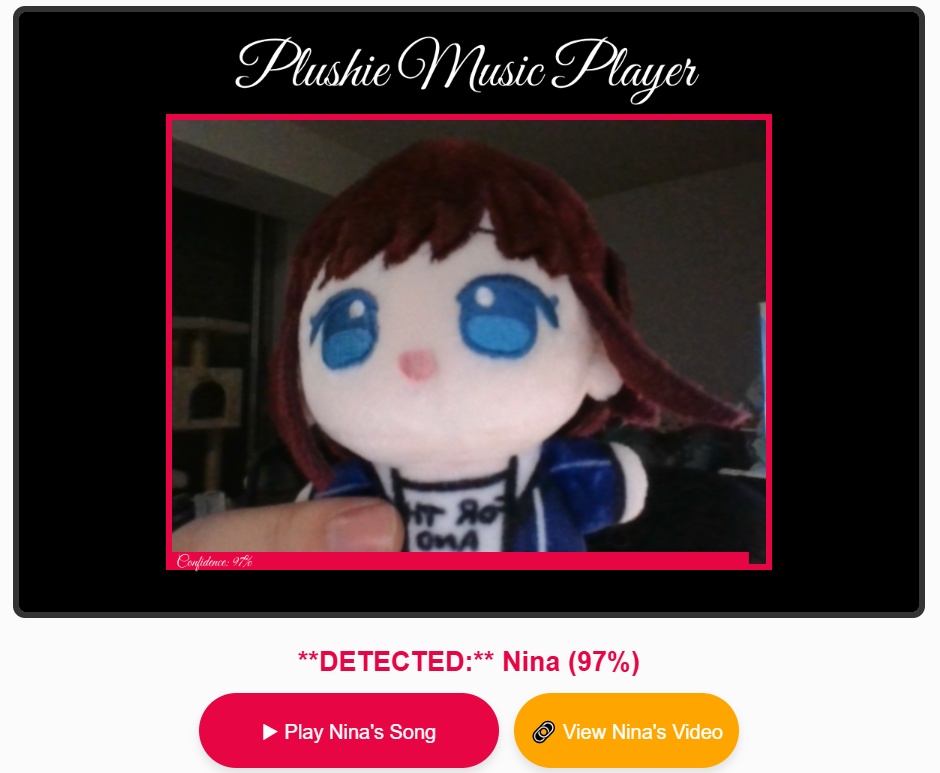

I love anime bands. I love plushies. When I was training the imagine ML feature with Professor Maxim Safioulline during the class, I pulled up one of my plushies so that the program can recognize my plushie as one of the items and lablled it as "plushie".
So that as I was admiring my little plushie when playing with the ML model, I thought of all the other new plushies that I just have - a plushie collection of a rock band group from the Anime "Girls Band Cry". Thinking of how cute they are, I thought of making an interface design project that can show off them and demonstrate their complicated friend/team dynamics.


Here is a short plan that I drafted - some members have a unique dynamics with another, so that when they are found together, the program will play a clip of music videos that specifically is designed for their dynamic. I will train the ML model to recognize each plushie, and the combinations of the plushies, so that the ML model can be used to make the project work.

Nowadays, it is very essential for a product to stand out, espacially for Anime merchs, which has become extremly competitive in the market. As an artist / art product designer who owns a small buisness besides school, I would like to use this project as my starting point to explore possible ways to enhance the interactive experiences of my products. "Girls Band Cry" is an very good example because it is famous in terms of the unique dynamics between each members of the band. I would like to practice my skills by buidling something based on that, to enrish the experiences those cute plushies could offer. Hence, I found this practice a good opportunity to develop my product design skill with a touch of interactive prototyping. Here is a tiktok example of an interactive product:
@miuakatsuki testing my AR feature on my #orv ♬ Chill in the shell - パミレド / Pamiredo
I first trained Google's Teachable Machine by identifying different class scenrios so that there are cases such as:
After having the ML trained, I started with a testing to see whether if I can put a music video into the program. As I initially planed to have this video being played and overlapping the webcam vedio automatically once Nina and Momoka are detected to be togethor.
However, I encountered many issues: 1) p5js cannot directly play videos from a link, espacially Youtube, as it has complicated protections, 2) The video downloaded from YouTube is too large in size to be uploaded to p5js, making it impossible to test on p5js editor, and lastly 3) Simply have the javascript sketch and files locally does not solve the problem.
All of these make it impossible to test / make sure the program runs. Hence, I would like to change my approach - instead of mp4 files, I would like to play the music while attach the YouTube link to the users so that they can check it out.
The recording is kind of cringe but you can see that I have a very rough prototype for now.
After consulting with Professor Maxim Safioulline during the class, I decided to continue my approach by further developing the learning machine and the UI interface to make this program more enjoyabe.
Due to the fact that a user needs all these plushies in real life, I would like to come up with a way to navigate around it so that they can try out the sketch themselves. Alongside with recordings of the sketch, I will also include some photoshoped pictures of the plushies for users to try out themselves. They can either choose to print them out or just have them on a tablet.


As Professor Maxim Safioulline also warned, the ML model will need a lot more pictures to be trained for my case in order to make it work for other users. Hence, I decided to take more pictures for training and will include the photoshoped versions to be included. For the sake of time and resources, I will only focus on three plushies: Nina, Momoka, and Subaru.
Starting from the version I have last week, I am not happy with my interface and would like to add more asethics and layout. For some reason, despite the fact that I placed my button at 'height' of the canvas, it is still in the middle of the camera video, blocking some of the other contents. So I played around with the numbers to move it down. I created an outer frame so that everything looks framed and more developed. I have also changed the colors of the interface elements, so that it better match with the band theme. I then started play with the font, where I chose a Google font called Great Vibes to further develop an aesthetic flavour.


Due to security limitations, the sketch will not function from this page. Please click on this link or the button for access.